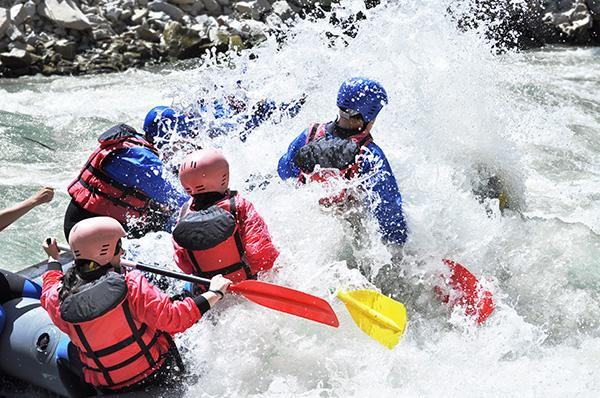
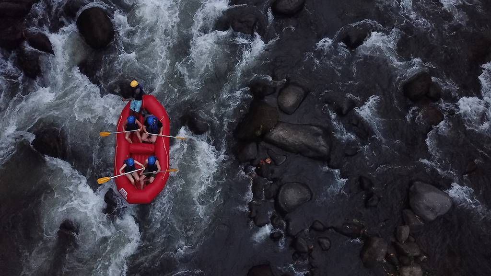
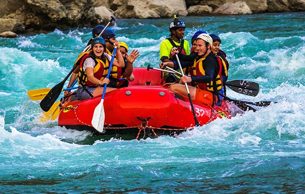
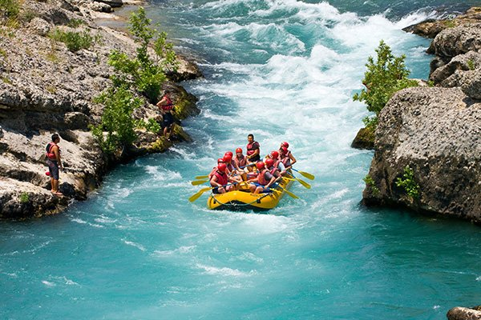

This is White Water Rafting! Get ready for an unforgettable adventure as we traverse nature’s most exciting rivers with experienced guides who put your safety and fun first.


This is White Water Rafting! Get ready for an unforgettable adventure as we traverse nature’s most exciting rivers with experienced guides who put your safety and fun first.
White Water Rafting was founded by outdoor enthusiasts who believed that adventure should be thrilling, safe, and accessible to everyone.

With decades of experience, our guides have led thousands of adventurers through unforgettable river journeys while building a legacy of trust and excitement.



